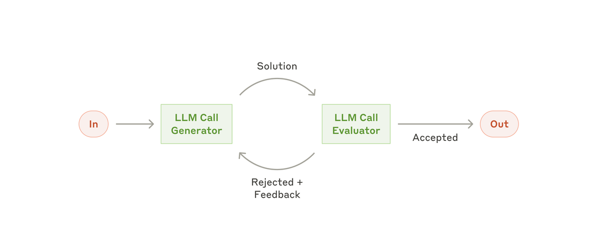
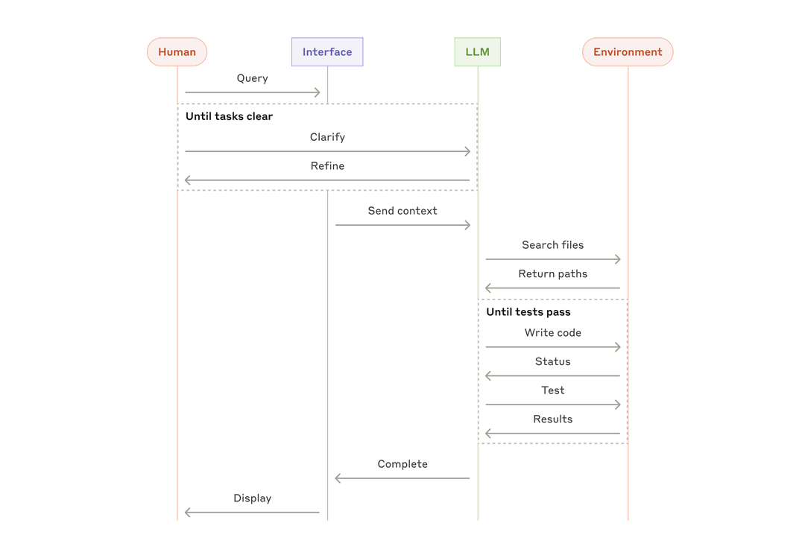

原文：Building effective agents 来源：Anthropic Engineering | 2024-12-19 作者：Erik S. & Barry Zhang
· · ·
· · ·
Skill 是一组文件加上一个 SKILL.md 清单（包含 frontmatter 和指令）。你可以把它理解为：一本带版本号的操作手册，模型在需要干活的时候可以随时查阅。
当 skill 可用时，平台会把每个 skill 的名称、描述和路径暴露给模型。模型根据这些元数据来决定是否调用某个 skill。如果决定调用，它就会读取 SKILL.md 获取完整的工作流程。
· · ·
Shell 工具让模型可以在真实的终端环境中工作，有两种模式：
托管 shell 通过 Responses API 运行，这意味着你的请求自带有状态的工作、tool call、多轮续接和产出物（artifact）。
· · ·
随着工作流变长，它们会撞上 context window 的限制。服务端 compaction 通过自动管理 context window 和压缩对话历史来保持长时间运行的连续性。
Responses API 中的 compaction 提供两种方式：
/responses/compact。· · ·
三者结合，你得到的是：有真实执行能力的可重复工作流——而不需要把 system prompt 变成一个脆弱的巨型文档。
· · ·
Skill 的描述实际上就是模型的决策边界。它应该回答：
一个实用的模式是：在描述中直接写一个简短的"适用场景 vs 不适用场景"块，并且保持具体（输入、涉及的工具、预期产出物）。
· · ·
一个出人意料的失败模式是：让 skill 可用反而会降低正确触发率。一个有效的修复方法是加入反面示例和边界情况覆盖。
具体来说，就是写几条明确的"不要在以下情况调用这个 skill……"（以及应该怎么做）。这能帮助模型更干净地做路由，尤其是当你有多个看起来相似的 skill 时。
Glean 直接验证了这一点：基于 skill 的路由最初在定向 eval 中触发率下降了约 20%，但在描述中加入反面示例和边界情况覆盖后恢复了。
· · ·
如果你一直在往 system prompt 里塞模板，停下来。把模板和示例放进 skill 有两个优势：
这对知识型工作输出特别有效，比如：
Glean 报告说，这个模式在生产环境中带来了他们最大的质量和延迟提升，因为那些示例只在 skill 触发时才加载。
· · ·
长周期 agent 很少能靠一次性 prompt 成功。从一开始就为连续性做规划：
previous_response_id——让模型可以在同一个线程中继续工作。这个组合减少了重启行为，让多步骤任务在线程增长时保持连贯。
· · ·
默认行为是模型自己决定何时使用 skill。这通常是你想要的。但当你在运行一个有明确契约的生产工作流（你宁可要确定性而不是聪明），直接说：
"使用 \
skill。"
这是你能拉动的最简单的可靠性杠杆。它把模糊的路由变成了显式的契约。
· · ·
这是一条现在容易忽略、以后难以修复的安全建议。
Skill 加上开放网络访问，会创造一条数据泄露的高风险路径。 如果你使用网络功能：
一个强默认姿态：
· · ·
对于托管 shell 工作流，把 /mnt/data 作为写入输出的标准位置——这些输出你会检索、审查或传入后续步骤。例如报告、清洗后的数据集、完成的电子表格。
一个好的心智模型：工具写入磁盘，模型推理磁盘上的内容，开发者从磁盘检索。
· · ·
网络访问在两个地方控制：
network_policy：必须是组织白名单的子集。两个在运维上重要的含义：
· · ·
如果一个白名单域名需要认证头，使用 domain_secrets，这样模型永远看不到原始凭证。
运行时，模型看到的是占位符（例如 $API_KEY），一个 sidecar 只为已批准的目标注入真实值。
这是一个强默认做法——任何时候你的 agent 需要从容器内调用受保护的 API。
· · ·
你可以同时使用这两个原语，而不必把所有东西都托管：
shell_call 并把 shell_call_output 返回给模型。一个实用的开发循环：
1. 本地开始（快速迭代、访问内部工具、方便调试） 2. 迁移到托管容器（当你需要可重复性、隔离和部署一致性时） 3. 保持 skill 在两种模式下相同（工作流保持稳定，即使执行环境变了）
· · ·
虽然你可以自由尝试这些新的 agentic 原语，这里有三个组合使用它们来构建有用应用的示例。
· · ·
这是从托管 shell 获益的最简单方式：agent 安装依赖、获取外部数据、产出一个具体的交付物。例如：
1. 安装几个库 2. 爬取或调用 API 3. 把报告写入 /mnt/data/report.md
这个模式是"真正干活的 agent"的基础，因为它创造了一个干净的审查边界：你的应用可以把产出物展示给用户、记录日志、做 diff，或者传入后续步骤。
· · ·
一旦你构建了一两个成功的 shell 工作流，你会注意到下一个问题：这能用，但当 prompt 漂移时可靠性会下降。这就是 skill 发挥作用的地方。
一个持久的结构：
1. 把工作流（步骤、护栏、模板）编码到一个 skill 中 2. 把 skill 挂载到你的 shell 环境 3. 让 agent 按照 skill 确定性地产出产出物
这对以下工作流特别有效：
· · ·
我们观察到的一个早期模式是：在单工具调用和多工具编排之间存在准确率差距。Skill 可以通过让工具推理更加程序化来弥合这个差距，而不会膨胀 system prompt。
来自 Glean 的具体案例：
一个面向 Salesforce 的 skill 把 eval 准确率从 73% 提升到 85%，并把首 token 延迟降低了 18.1%。实用策略包括精心的路由、反面示例，以及在 skill 内嵌入模板/示例。
Glean 还使用 skill 来编码企业工作流中的重复任务，包括客户规划、升级分诊和品牌对齐的内容生成。
这就是事情变得强大的形态。Skill 变成了活的 SOP（标准操作程序）：随着组织演进而更新，由 agent 一致地执行。
· · ·
长时间运行的 agent 在能够同时遵循程序和在计算机上做真实工作时，会变得极其有用。Skills、托管 shell 和 compaction 创造了这个基础。
总结：
开始在你自己的应用中使用吧。查看 skills 文档、shell 文档 和 compaction 文档 了解更多。
· · ·
本节我们将探讨在生产环境中常见的 agentic 系统模式。我们从基础构建模块——增强型 LLM——开始，逐步增加复杂度，从简单的组合式工作流到自主 agent。
· · ·
Agentic 系统的基本构建模块是经过增强的 LLM——配备了检索（retrieval）、工具（tools）和记忆（memory）等能力。当前的模型能主动使用这些能力：自己生成搜索查询、选择合适的工具、决定保留哪些信息。
图：增强型 LLM 的基本结构
我们建议在实现时关注两个关键方面：将这些能力针对你的具体用例进行定制，以及确保它们为 LLM 提供简单、文档完善的接口。虽然实现增强的方式有很多，其中一种是通过我们最近发布的 Model Context Protocol（MCP），它允许开发者通过简单的客户端实现接入不断增长的第三方工具生态。本文后续内容假设每次 LLM 调用都能访问这些增强能力。
· · ·
Prompt chaining（链式调用）将任务分解为一系列步骤，每次 LLM 调用处理上一步的输出。你可以在任何中间步骤添加程序化检查（如下图中的"gate"），确保流程仍在正轨上。

图：Prompt 链式调用工作流
适用场景： 当任务可以轻松、清晰地分解为固定子任务时。主要目标是用延迟换取更高的准确率——让每次 LLM 调用处理更简单的任务。
示例：
· · ·
Routing（路由）对输入进行分类，并将其导向专门的后续任务。这种工作流实现了关注点分离，可以构建更专门化的 prompt。如果不做路由，针对某类输入的优化可能会损害其他输入的表现。

图：路由工作流
适用场景： 当复杂任务存在明确的类别，且这些类别分开处理效果更好时——前提是分类可以被准确完成（无论是用 LLM 还是传统分类模型/算法）。
示例：
· · ·
LLM 有时可以同时处理一个任务的不同部分，然后通过程序化方式聚合输出。这种并行化工作流有两种主要变体：

图：并行化工作流
适用场景： 当子任务可以并行执行以提升速度时，或者当需要多个视角/多次尝试来获得更高置信度时。对于涉及多个考量因素的复杂任务，让每个考量由单独的 LLM 调用处理通常效果更好——每次调用可以专注于特定方面。
示例：
· · ·
在 orchestrator-workers（编排者-工作者）工作流中，一个中央 LLM 动态拆解任务、将子任务委派给工作者 LLM，然后综合它们的结果。

图：编排者-工作者工作流
适用场景： 当复杂任务的子任务无法提前预测时（例如在编码中，需要修改的文件数量和每个文件的修改内容取决于具体任务）。虽然拓扑结构与并行化类似，关键区别在于灵活性——子任务不是预定义的，而是由编排者根据具体输入动态决定的。
示例：
· · ·
在 evaluator-optimizer（评估者-优化者）工作流中，一个 LLM 调用生成响应，另一个在循环中提供评估和反馈。

图：评估者-优化者工作流
适用场景： 当存在明确的评估标准，且迭代优化能带来可衡量的价值时。两个适配信号是：第一，当人类明确表达反馈时 LLM 的响应能明显改善；第二，LLM 能够提供这样的反馈。这类似于人类作者在产出精炼文档时经历的迭代写作过程。
示例：
· · ·
随着 LLM 在关键能力上日趋成熟——理解复杂输入、进行推理和规划、可靠地使用工具、从错误中恢复——agent 正在生产环境中崭露头角。Agent 的工作始于用户的指令或与用户的交互式讨论。一旦任务明确，agent 就会独立规划和执行，必要时返回向人类获取更多信息或判断。
在执行过程中，agent 在每一步从环境获取"ground truth"（如工具调用结果或代码执行输出）来评估进展至关重要。Agent 可以在检查点或遇到阻碍时暂停，等待人类反馈。任务通常在完成时终止，但也常设置停止条件（如最大迭代次数）来保持控制。
Agent 能处理复杂任务，但实现往往很直接。它们通常只是 LLM 在循环中根据环境反馈使用工具。因此，清晰、周到地设计工具集及其文档至关重要。我们在附录 2（"Prompt Engineering your Tools"）中展开了工具开发的最佳实践。

图：自主 Agent
适用场景： 当面对开放式问题，无法预测所需步骤数量，也无法硬编码固定路径时。LLM 可能运行很多轮，你需要对其决策有一定程度的信任。Agent 的自主性使其非常适合在可信环境中扩展任务。
自主性也意味着更高的成本和错误累积的风险。我们建议在沙箱环境中进行充分测试，并配备适当的 guardrails。
示例（来自我们自己的实现）：

图：编码 agent 的高层流程
· · ·
这些构建模块不是规定性的。它们是开发者可以根据不同用例塑造和组合的常见模式。成功的关键——和所有 LLM 功能一样——是衡量性能并迭代实现。再次强调：只有在复杂度能明显改善结果时才增加复杂度。
· · ·
在 LLM 领域取得成功，不在于构建最复杂的系统，而在于构建最适合你需求的系统。从简单的 prompt 开始，用全面的评估来优化它们，只有当简单方案不够用时才引入多步骤 agentic 系统。
在实现 agent 时，我们遵循三个核心原则：
1. 保持 agent 设计的简洁性 2. 优先透明性——明确展示 agent 的规划步骤 3. 精心打造 agent-计算机接口（ACI）——通过完善的工具文档和测试
框架可以帮你快速起步，但在走向生产时不要犹豫去减少抽象层、用基础组件来构建。遵循这些原则，你可以创建不仅强大，而且可靠、可维护、受用户信任的 agent。
· · ·
我们与客户的合作揭示了 AI agent 的两个特别有前景的应用方向，它们展示了上述模式的实际价值。这两个应用都说明了 agent 在以下场景中最能发挥价值：需要对话与行动相结合、有明确的成功标准、能形成反馈循环、并整合有意义的人类监督。
客户支持将熟悉的聊天机器人界面与通过工具集成增强的能力相结合。这天然适合更开放式的 agent，因为：
多家公司已通过按成功解决收费的定价模式证明了这种方法的可行性，这体现了他们对 agent 有效性的信心。
软件开发领域展现了 LLM 功能的巨大潜力，能力已从代码补全演进到自主问题解决。Agent 在这里特别有效，因为：
在我们自己的实现中，agent 现在可以仅根据 pull request 描述来解决 SWE-bench Verified benchmark 中的真实 GitHub issue。然而，虽然自动化测试有助于验证功能，人类审查对于确保方案符合更广泛的系统需求仍然至关重要。
· · ·
无论你构建哪种 agentic 系统，工具都可能是 agent 的重要组成部分。工具让 Claude 能够与外部服务和 API 交互——通过在 API 中指定工具的精确结构和定义。当 Claude 响应时，如果它计划调用工具，会在 API 响应中包含一个 tool use block。
工具定义和规范应该得到与整体 prompt 同等程度的 prompt engineering 关注。
在这个简短的附录中，我们描述如何对工具进行 prompt engineering。
同一个操作通常有多种指定方式。例如，你可以通过写 diff 来指定文件编辑，也可以重写整个文件。对于结构化输出，你可以在 markdown 中返回代码，也可以在 JSON 中返回。在软件工程中，这些差异是表面的，可以无损转换。然而，某些格式对 LLM 来说比其他格式难写得多。写 diff 需要在新代码写出之前就知道 chunk header 中有多少行在变化。在 JSON 中写代码（相比 markdown）需要额外转义换行符和引号。
我们对选择工具格式的建议：
一个经验法则是：想想人机接口（HCI）投入了多少精力，然后计划在创建良好的 agent-计算机接口（ACI） 上投入同等精力。以下是一些具体建议：
在构建 SWE-bench agent 时，我们实际上花在优化工具上的时间比优化整体 prompt 还多。例如，我们发现当 agent 离开根目录后，模型在使用相对文件路径的工具时会犯错。为了解决这个问题，我们将工具改为始终要求绝对路径——结果模型使用这种方式完美无误。
· · ·